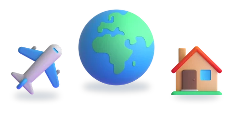
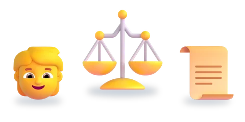
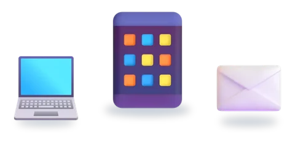
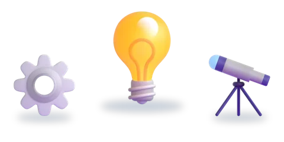
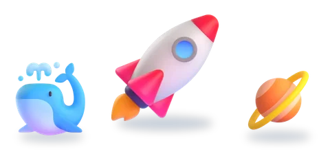
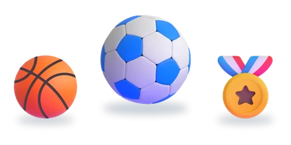

المستوى الخامس
ست وحدات، لكلّ وحدة خمسة أسابيع
اختر الوحدة، ثمّ الدرس.

الوحدة 1مغاربة العالم3 دروس
الوحدة 2الواجبات والحقوق5 دروس
الوحدة 3وسائل الاتصال والتواصل6 دروس
الوحدة 4الابتكارات والاختراعات4 دروس
الوحدة 5عالم البحار والفضاء3 دروس
الوحدة 6الألعاب والرياضة5 دروس إثراءدروس الإثراء5 دروس
إثراءدروس الإثراء5 دروس
الرسوم: Twemoji (CC-BY 4.0) وFluent Emoji من Microsoft (MIT). الأصوات: صوت عربي اصطناعي.